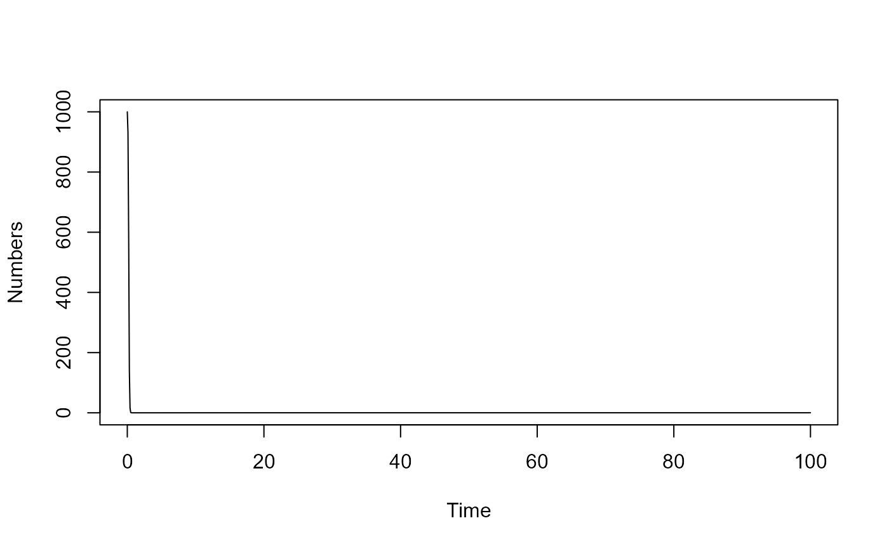

A compartmental model with several different compartments: Susceptibles (S), Infected and Pre-symptomatic (P), Infected and Asymptomatic (A), Infected and Symptomatic (I), Recovered and Immune (R) and Dead (D). Also modeled is an environmental pathogen stage (E), and susceptible (Sv) and infected (Iv) vectors.
Usage
simulate_Complex_ID_Control_ode(
S = 1000,
P = 1,
A = 1,
I = 1,
R = 0,
D = 0,
E = 1,
Sv = 1000,
Iv = 1,
nH = 0.01,
mH = 0.001,
nV = 0.01,
mV = 0.001,
bP = 0.02,
bA = 0.02,
bI = 0.02,
bE = 0.02,
bV = 0.02,
bH = 0.02,
gP = 0.7,
gA = 0.1,
gI = 0.1,
pI = 0.04,
pA = 0.03,
c = 0.7,
f = 0.08,
d = 0.01,
w = 0.003,
tstart = 0,
tfinal = 100,
dt = 0.1
)Arguments
- S
: starting value for Susceptible : numeric
- P
: starting value for Presymptomatic : numeric
- A
: starting value for Asymptomatic : numeric
- I
: starting value for Symptomatic : numeric
- R
: starting value for Recovered : numeric
- D
: starting value for Dead : numeric
- E
: starting value for Pathogen in Environment : numeric
- Sv
: starting value for Susceptible Vector : numeric
- Iv
: starting value for Infected Vector : numeric
- nH
: Birth rate of susceptible hosts : numeric
- mH
: Death rate of hosts : numeric
- nV
: Birth rate of susceptible vectors : numeric
- mV
: Death rate of vectors : numeric
- bP
: rate of transmission from pre-symptomatic hosts : numeric
- bA
: rate of transmission from asymptomatic hosts : numeric
- bI
: rate of transmission from symptomatic hosts : numeric
- bE
: rate of transmission from environment : numeric
- bV
: rate of transmission from vectors to hosts : numeric
- bH
: rate of transmission to vectors from hosts : numeric
- gP
: rate of movement out of P compartment : numeric
- gA
: rate of movement out of A compartment : numeric
- gI
: rate of movement out of I compartment : numeric
- pI
: rate of pathogen shedding into environment by symptomatic hosts : numeric
- pA
: rate of pathogen shedding into environment by asymptomatic hosts : numeric
- c
: rate of pathogen decay in environment : numeric
- f
: fraction of presymptomatic that move to asymptomatic : numeric
- d
: fraction of symptomatic infected hosts that die due to disease : numeric
- w
: rate of immunity waning : numeric
- tstart
: Start time of simulation : numeric
- tfinal
: Final time of simulation : numeric
- dt
: Time step : numeric
Value
The function returns the output as a list.
The time-series from the simulation is returned as a dataframe saved as list element ts.
The ts dataframe has one column per compartment/variable. The first column is time.
Details
Susceptible individuals (S) can become infected by pre-symptomatic (P), asymptomatic (A) or symptomatic (I) hosts. The rates at which infections from the different types of infected individuals (P, A and I) occur are governed by 3 parameters, _b~P~_, _b~A~_, and _b~I~_. Susceptible individuals (S) can also become infected by contact with the environment or infected vectors, at rates _b~E~_ and _b~v~_. Susceptible vectors (S~v~) can become infected by contact with symptomatic hosts at rate _b~h~_. All infected hosts first enter the presymptomatic stage. They remain there for some time (determined by rate _g~P~_, the inverse of which is the average time spent in the presymptomatic stage). A fraction _f_ of presymptomatic hosts move into the asymptomatic category, and the rest become symptomatic infected hosts. Asymptomatic infected hosts recover after some time (specified by the rate _g~A~_). Similarly, the rate _g~I~_ determines the duration the symptomatic hosts stay in the symptomatic state. For symptomatic hosts, two outcomes are possible. Either recovery or death. The parameter _d_ determines the fraction of hosts that die due to disease. Recovered individuals are initially immune to reinfection. They can lose their immunity at rate _w_ and return to the susceptible compartment. Symptomatic and asymptomatic hosts shed pathogen into the environment at rates p~A~ and p~I~. The pathogen in the environment decays at rate _c_. New susceptible hosts and vectors enter the system (are born) at rates _n~h~_ and _n~v~_. Mortality (death unrelated to disease) for hosts and vectors occurs at rates _m~h~_ and _m~v~_.
This code was generated by the modelbuilder R package. The model is implemented as a set of ordinary differential equations using the deSolve package. The following R packages need to be loaded for the function to work: deSolve.
Warning
This function does not perform any error checking. So if you try to do something nonsensical (e.g. have negative values for parameters), the code will likely abort with an error message.
Examples
# To run the simulation with default parameters:
result <- simulate_Complex_ID_Control_ode()
# To choose values other than the standard one, specify them like this:
result <- simulate_Complex_ID_Control_ode(P = 2,A = 2,I = 2,R = 0,D = 0,E = 2,Iv = 2)
# You can display or further process the result, like this:
plot(result$ts[,'time'],result$ts[,'S'],xlab='Time',ylab='Numbers',type='l')

print(paste('Max number of S: ',max(result$ts[,'S'])))
#> [1] "Max number of S: 1000"